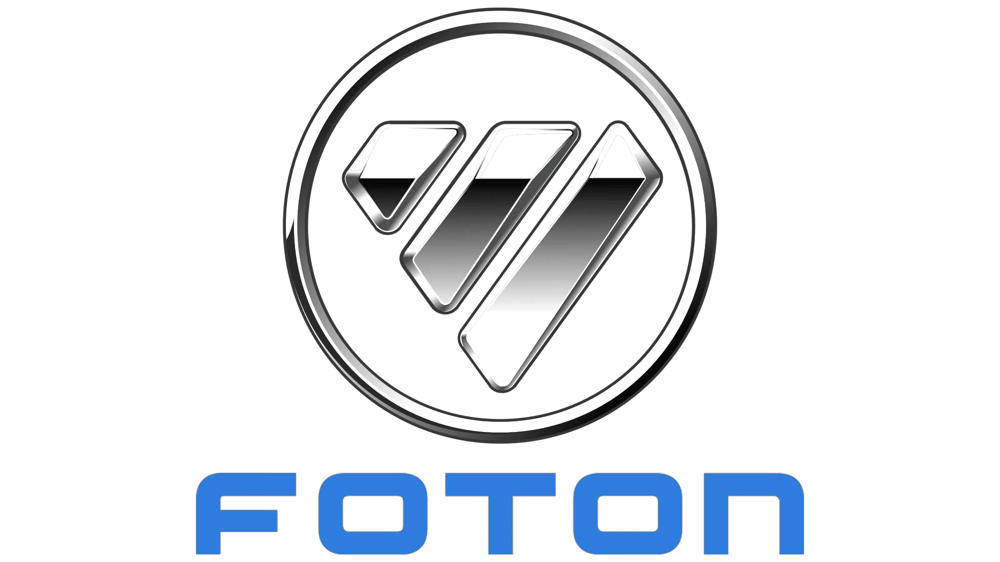

Red de soporte técnico y abasto de refacciones de alcance nacional para mantener su operación sin interrupciones.

Lineup completo con transmisión AMT disponible en toda la gama — la ventaja competitiva más relevante del mercado.
El músculo logístico de México operando con tecnología FOTON.


